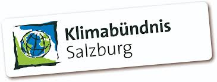

Malermeister
Seit 1999 sind wir Mitglied bei den Klimaschutzbündnisbetrieben  Laufende Ausbildung von Lehrlingen und ständige Schulung der Mitarbeiter sind bei uns selbstverständlich. Neben Handel und Verarbeitung von Naturfarben verarbeiten wir hochwertigste Mineralfarben der Firma Keim. Verarbeitet werden vorzugsweise biologische Imprägnierungen, Lasuren, Wachsbalsame, Naturharzlacke, Wandfarben und Kleber mit pflanzlichen Bindemitteln.
Kontaktieren Sie uns